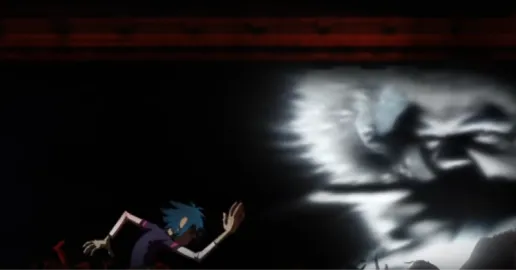

.svg)


Histoire de la chanson
Cette chanson est sortie en 2005, et fait partie de l’album Demons Days. Elle s’inscrit dans la Phase 2 de Gorillaz. Une version antérieure était déjà sortie en 2004, sous le nom de Feel Good Inc, Noodle’s Demo. Elle était la 1ère version de la chanson écrite et produite par Noodle, avant qu’elle ne soit présumée morte. De la Soul était normalement censé chanter sur Kids With Guns, mais Noodle a décidé de l’inviter sur Feel Good Inc. Il s’agissait en réalité de Damon, Albarne, le co-créateur de la chanson, qui pensait ce choix plus judicieux. À l’origine, sur la démo, c’était le groupe Demon Days Band qui était présent sur la 1ère version de Feel Good Inc.
Analyse du Clip
Couplet 1
Dans les premières secondes, on peut observer 2-d, Murdoc et Russel dans une salle de concert, très probablement le lendemain. La salle de concert est située en haut d’une grande tour, avec une affiche géante « Feel Good Inc ».
La tour de Feel Good Inc
Tout le publique est couché par terre, à moitié endormi. Des hélicoptères apparaissent dans le ciel. On peut entendre dès le début un rire « méchant ». 2-d est le premier du groupe à se réveiller, et prend un mégaphone pour commencer à chanter. Cela réveille les 2 autres membres du groupe, qui se mettent à jouer leur instrument (Murdoc à la basse et Russel à la batterie).

La salle de concert
Refrain
Tout en chantant, 2-d traverse la salle pour aller se poster à la fenêtre. Les 2 autres membres du groupe se lèvent, ainsi que certaines personnes du publique. Quand 2-d arrive à la grande baie vitrée, il aperçoit l’île volante de Noodle. Quand l’île volante au moulin apparaît à l’écran, le refrain commence. La scène et le refrain se finissent sur les mêmes hélicoptères du début.
L'île de Noodle
Couplet 2
Ensuite, le couplet de De la Soul commence. Des écrans s’allument et on voit le rappeur commencer à chanter. 2-d est attiré et se retrouve à danser au milieu des interférences et des flashs de l’écran. Les scènes sont très rapides et peuvent même faire penser que 2-d a pris de la drogue.
La danse de 2-d
Refrain 2
Le couplet se fini et on retrouve Noodle et son île volante. On entend des bruits d’oiseaux, ce qui donne une ambiance paisible. Mais ce calme est troublé par un bruit de fond des hélicoptères. L’île reprend sa direction vers l’immeuble, et le refrain recommence, avec 2-d de nouveau collé à la vitre pour regarder Noodle. On la voit chantonner la musique.
Noodle sur son île, avec sa guitare
Couplet final
Puis, le 3e couplet commence, et le plan est surtout sur un « show » de Murdoc, qui se déhanche. Enfin, on voit l’île de Noodle contourner le grand bâtiment « Feel Good Inc », pour partir tourner le clip de El Mañana, et prendre des vacances méritées après avoir écrit tout l’album Demon Days.

Le show de Murdoc
Cependant, les deux hélicoptères aperçus en début de clip la suivre de loin… La suite de l’histoire sera dans le clip de El Mañana !